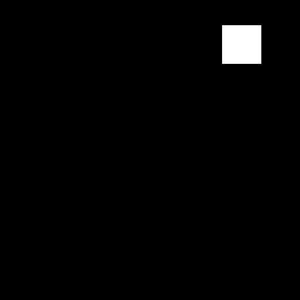
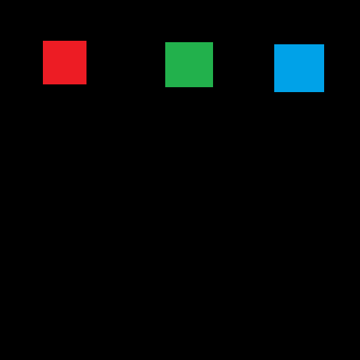
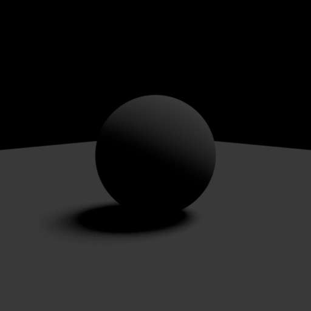
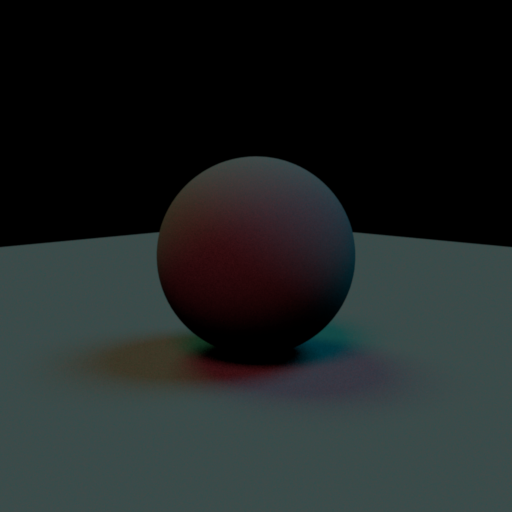
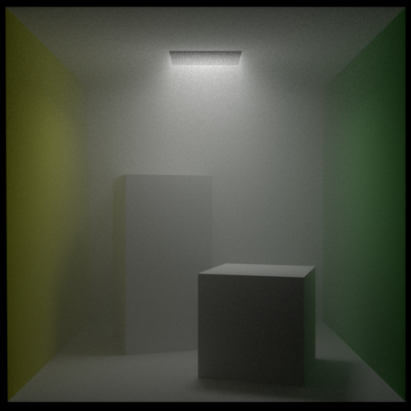
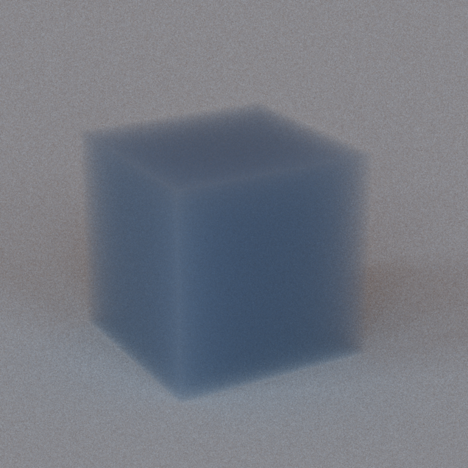
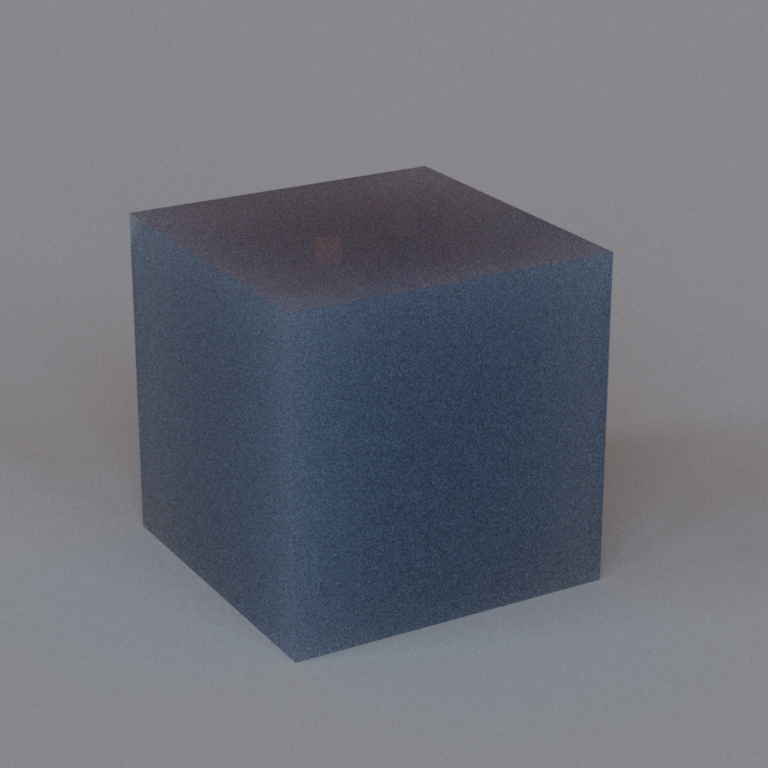
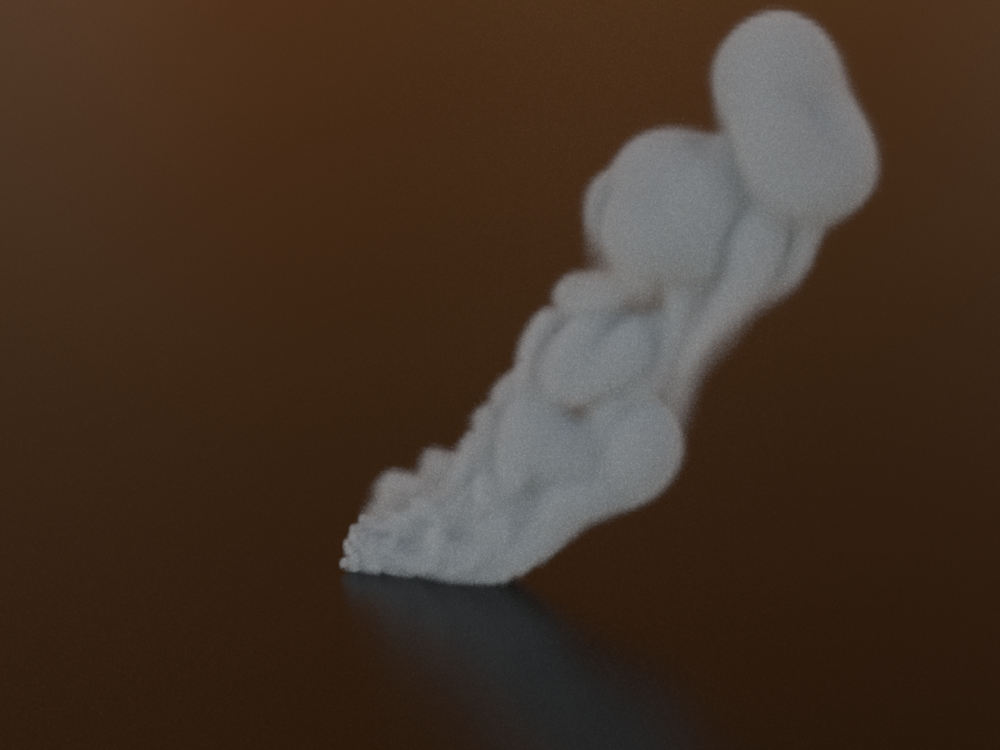
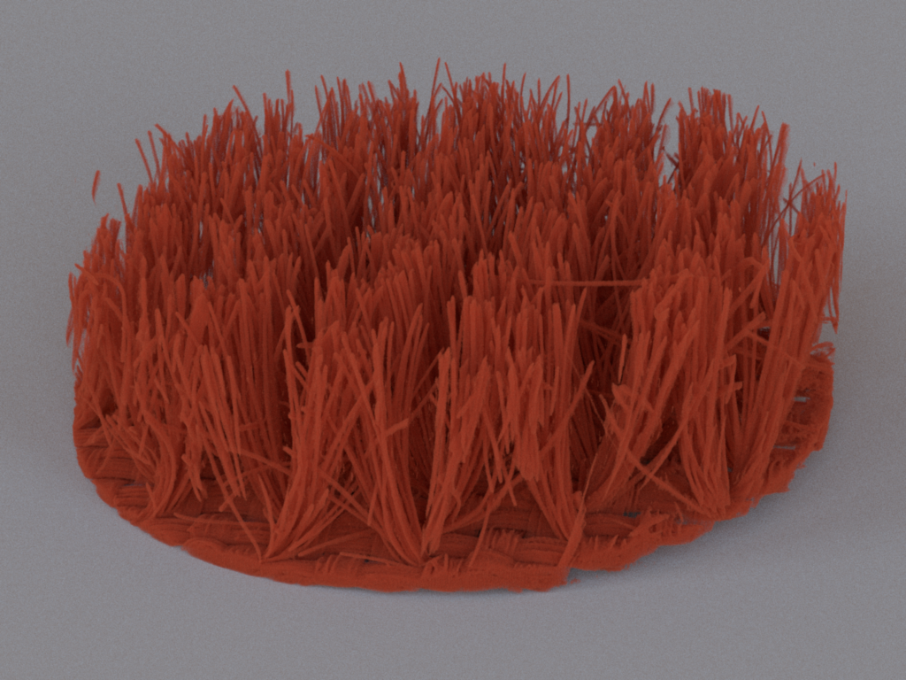

Programming Assignment 3 Participating Media
Introduction
At this point, you have a Monte Carlo path tracer at your command that is capable of producing realistic images of scenes designed using surfaces. In this assignment, you'll add support for homogeneous and heterogeneous participating media as discussed in class. This will extend the renderer's range to scenes including hazy atmospheres, subsurface scattering, plumes of steam or smoke, and other kinds of volumetric data (e.g. CT scans).
Please download the volumetric data that are used in the scenes in this assignment from this link. Due to their sizes, they are not included in the source code repository. Extract the two volume files into the data/pa3 directory.
Part 1: Environment Map
Implement the EnvironmentMap class which represents distant light source whose radiance distribution is determined by an image. As discussed earlier, there can be at most one environment in the scene and it cannot coexist with a distant disk source. An environment map is fully specified by (1) an image of the spherical radiance distribution given in Mercator projection, (2) a scale factor, and (3) a toWorld transformation, which is used in the same way as in the distant disk light.
The following is how an environment map is specified in Wakame's description language:
<scene>
<!-- Load a radiance-valued latitude/longitude bitmap from "grace.pfm" -->
<emitter type="envmap">
<string name="filename" value="grace.pfm"/>
<!-- Scale the radiance values by a factor of 2 -->
<float name="scale" value="2"/>
<!-- Rotate the environment map 30 degrees counter-clockwise around the Y-axis -->
<transform name="toWorld">
<rotate axis="0,1,0" value="30"/>
</transform>
</emitter>
<!-- ..... -->
</scene>
You can assume that the picture file will always be a PFM image. Wakame comes with an implementation of PFM image, located in the yondoko.image.Pfm class.
Radiance Evaluation
Let $\omega_i$ be a direction in world coordinate extending from point $x$. If the ray from $x$ in direction $\omega_i$ does not hit any scene object, then the radiance given by the environment map is given as follows:
- Transform $\omega_i$ into the local coordinates of the light source. Let us call the result $\omega_e$.
- Rewrite $\omega_e$ in spherical coordinate $(\theta_e, \phi_e)$ where: $$ \omega_e = \begin{bmatrix} \sin \theta_e \cos \phi_e \\ \sin \theta_e \sin \phi_e \\ \cos \theta_e \end{bmatrix}.$$
- Perform the Mercator projection: \begin{align*} x &= \frac{\phi_e}{2\pi} \times (\mathrm{image\ width}) \\ y &= \mathrm{image\ height} - \frac{\theta_e}{\pi} \times (\mathrm{image\ height}) \end{align*}
- Fetch the pixel intensity of the image at $(x,y)$ and multiply by the scaling factor to get the radiance: $$ \mathrm{radiance} = (\mathrm{scaling\ factor}) \times \mathrm{image}[x,y] $$
Sampling and Density
Implement a method for generating a world space direction in such a way that the probability that a pixel in the image is sampled is proportional to the luminance of the pixel intensity times the solid angle that the pixel subtends. Again, this method should be acommpanied by another method which returns the probability of sampling a given world space direction.
Testing
Render the scenes in the data/pa3/envmaps directory and see if you get the right results.
| envmap_0_ems.xml | envmap_1_ems.xml | envmap_2_ems.xml | envmap_3_ems.xml | envmap_4_ems.xml | |
| Environment Map |  |
 |
 |  |  |
| Reference |  |
 |
 |  |  |
{kind=link}
{kind=link}
{kind=link}
{kind=link}
Part 2: Phase Functions
The framework already ships with an API and an implementation of a purely isotropic phase function. Add the Henyey-Greenstein model and verify it against the provided $\chi^2$-test in data/pa3/tests directory. The Henyey-Greenstein model specify the probability of the angle $\theta$ that the outgoing direction $\omega_o$ makes with the incoming direction $\omega_o$ as: \begin{align*} p(\theta) = \frac{1}{4\pi} \frac{1-g^2}{[1 + g^2 - 2g \cos \theta]^{3/2}} \end{align*} where $-1 \leq g \leq 1$ is a parameter of the model. You may find this PDF file useful when sampling the phase function.
You should test your Henyey-Greenstein phase function implementation against the data/pa3/tests/chi2test-hg.xml test file.
Part 3: Medium Sampling
Production systems usually support rendering with arbitrary numbers of participating media that can be given complex shapes, e.g. by attaching them to surfaces in the scene. Implementing media at this level of generality is unfortunately very laborious. Here, we focus on the most basic case to simplify the project as much as possible: a single box-shaped medium. This time, all of the logic for constructing media from the scene description is already part of the framework code. For instance, the following scene description will instantiate a homogeneous medium and register it with the Scene class:
<scene>
<medium type="homogeneous">
<!-- By default, the medium occupies the region [0,0,0]-[1,1,1]. Scale and rotate it: -->
<transform name="toWorld">
<scale value="5,5,5"/>
<rotate axis="0,1,0" angle="45"/>
</transform>
<!-- Absorption and scattering coefficients -->
<color name="sigmaA" value="0.01,0.01,0.01"/>
<color name="sigmaS" value="1, 1, 1"/>
<!-- Instantiate a Henyey-Greenstein phase function -->
<phase type="hg">
<!-- Configure as slightly forward-scattering -->
<float name="g" value="0.5"/>
</phase>
</medium>
...
</scene>
To account for medium scattering interactions, your renderer must be able to importance sample the integral form of the radiative transfer equation. To support direct illumination computations, it must futhermore be able to compute the transmittance between two world-space positions in the scene. Take a look at the existing homogeneous and heterogeneous media classes in wakame.media.Homogeneous and wakame.media.Heterogeneous and make sure that you understand what they do. Add support for the missing operations (distance sampling and tranmittance evaluation) using sampling and evaluation techniques of your choice.
Distance Sampling
Recall the radiance according to the radiative transfer equation (assuming no emitter term): $$L_o(x, \omega_o) = \int_{0}^\infty e^{-T(x,x+\omega_o t)} \sigma_s(x + \omega_o t)\bigg( \int_{S^2} f(x, \omega_i, \omega_o) L_i(x+\omega_o t, \omega_i)\ d\omega_i \bigg) \ dt$$ where $f$ is the phase function, and $T(x, x+\omega_o s)$ is the transmittance term: $$ T(x, x+\omega_o t) = \int_0^t \sigma_t(x - \omega_o s)\ ds$$ (beware that $\omega_o$ in this case does not have to be a unit vector). To evaluate this integral, we sample a distance $\tilde{t}$ along the ray from $x$ in direction $\omega_o$ and evaluate: $$ \frac{1}{p(\tilde{t})} e^{-T(x,x+\omega_o \tilde{t})} \sigma_s(x+\omega_o \tilde{t}) \bigg( \int_{S^2} f(x, \omega_i, \omega_o) L_i(x+\omega_o \tilde{t}, \omega_i)\ d\omega_i \bigg)$$
The sampleDistance method of the Medium class should sample $\tilde{t}$, which indicates the location of a scattering (not absorption!) interaction with the volume along the ray. If method decides that no interaction occurs along the ray (for example, if the ray does not intersact the medium at all or if an interaction does not occur due to randomness), it should return false. Otherwise, it should return true and populate the given MediumQueryRecord with the distance $\tilde{t}$ in the t field.
In this assignment, we leave the evaluation of the integral involving the phase function $f$ to the integrators that you will implement in Task 4. On the other, the evaluation of the other terms should be carried out by the Medium class. As such, the weight field of the MediumQueryRecord should be set to $$\frac{ e^{-T(x,x+\omega_o \tilde{t})} \sigma_s(x +\omega_o \tilde{t}) }{p(\tilde{t})}$$ so that the integrators can just multiply their estimates of the phase function integral with the value in the weight field. It is your job to specify the probability distribution $p$ and sample according to it.
Transmittance Evaluation
The evalTransmittance function should evaluate the exponential of the negative of the transmittance term:
$$ \exp( -T(\mathbf{o} + \mathbf{d}t_1, \mathbf{o} + \mathbf{d} t_2) )$$
where $\mathbf{o}$ is the ray's origin, $\mathbf{d}$ is the ray direction (not necessarily a unit vector), the interval $[t_1, t_2]$ is the time interval in which the ray intersects the medium, and
$$ T(\mathbf{o} + \mathbf{d}t_1, \mathbf{o} + \mathbf{d} t_2) = \int_{t_1}^{t_2} \sigma_t(\mathbf{o} + \mathbf{d} s)\ ds.$$ It is your job to evaluate the above integral.
Homogeneous Medium
The Homogeneous class represents a volume with constant $ \sigma_s $ and $ \sigma_a $ inside its axis-aligned bounding box (specified by the bbox field). When implementing the required operations, you have to figure out which portion of the given way intersects the bounding box and do calculation accordingly.
Heterogeneous Medium
For the Heterogeneous class, notice that the class contains an instance of wakame.volume.GridVolume as a representation for the underlying, spatially varying density field. Here are some hints on the implementation:
- The underlying
GridVolumewill only be float volume. You do not have to concern yourself with the vector volume aspect of its capabilities. The reason why the vector volume is there is because the class is lifted from a more general renderer implementation, which has been used in research here at Cornell. - The $ \sigma_t $ value of the Heterogenoues has the same value for all the three color channels. (However, $ \sigma_t $ of the Homogeneous class might not be the same across the channels.) The $ \sigma_t $ value at point $p$ is given by: $$ \sigma_t(p) = (\mathrm{density\ scaling\ factor}) \times (\mathrm{GridVolume\ lookup\ at\ point\ }p).$$ The lookup can be performed using the
lookupFloatmethod of theGridVolumeclass. - The $\sigma_s$ of the volume at point $p$ is given by the albedo times the $\sigma_t$: $$\sigma_s(p) = \mathrm{albedo} \times \sigma_t(p). $$
- When implementing the
evalTransmittancemethod, you will find theintegrateFloatmethod of theGridVolujmeclass useful. - We suggest you use Woodcock tracking to implement distance sampling.
Part 4: Path Tracers
Extends your path_mats and path_mis so that they support participating media. Name your extended path tracers volpath_mats and volpath_mis, respectively.
After you're done with extending the path tracers, make sure that they pass the following tests in the data/pa3/tests directory:
- furnace-abs.xml
- faunace-scat.xml
- slab.xml
- slab-hg.xml
- cbox-foggy
- steam
- velvet
- scatcube-mismatched
- scatcube-matched
 |
 |
| cbox-foggy-mats.xml | cbox-foggy-mis.xml |
|  |  |
| scatcube-mathced-mats.xml | scatcube-matched-mis.xml |
 |
 |
| scatcube-mismatched-mats.xml | scatcube-mismatched-mis.xml |
|  | |
| steam-mats.xml | steam-mis.xml |
 |
 |
| velvet-mats.xml | velvet-mis.xml |
{kind=link}
{kind=link}
{kind=link}
{kind=link}
{kind=link}
{kind=link}